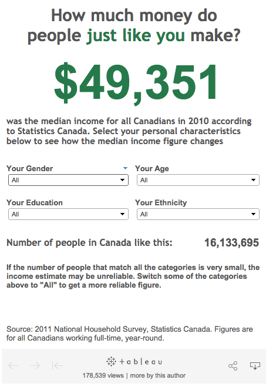

Five commandments for
effective interactive story-telling
‘Interactive news’ teams

Source: Rich Gordon, Knight Lab, Northwestern University
‘News applications’
“a large web-based interactive database that tells a journalistic story using software instead of words and pictures.”
— Scott Klein, ProPublica
Many types of ‘news app’

Educating newsroom ‘data civilians’
- When (and when not) to use interactive storytelling.
- Characteristics of good (and bad) interactive stories.
- Objective rules to build confidence in a new team
The five commandments
When producing interactive stories, thou shalt:
- Tell a story.
- Use interactivity only where unavoidable.
- Create a product of lasting value.
- Use data integral to reporting the story.
- Involve data specialists from the outset.
1. Tell a story
An interactive news application must meet a clearly-stated user need and explain a topic with a narrative structure, not just display data for the reader to explore.
Shneiderman’s mantra
“Overview first, zoom and filter, then details-on-demand”
Source: Ben Shneiderman, “The Eyes Have It: A Task by Data Type Taxonomy for Information Visualizations”. Proceedings of the IEEE Symposium on Visual Languages, 336-343, 1996.
Explanatory and exploratory
Source: Financial Times
Election example
Source: FT: Election results explained | Video
Macro and micro
Source: Financial Times
The ‘Martini-glass’ narrative
Highlight the important views before handing over control.

Source: Edward Segel and Jeffrey Heer, “Narrative Visualization: Telling Stories with Data”
Highlighting personal relevancy
Very effective ‘micro’ view is personalisation.
Election example: National vs local results
Here is the news about You

Microscopes or mirrors?
Chad Skelton, Vancouver Sun
Quizzes work

Source: “How Y’all, Youse and You Guys Talk”New York Times, December 21, 2013
Quizzes work
But not all quizzes are journalism

Sources: Buzzfeed, “Which letter from the title of ‘Frozen’ are you?”
Games & reader role-playing
Source: Financial Times
2. Avoid gratuitous interactivity
Interactivity shifts cognitive burden onto the reader, so:
- Should not be an end in itself.
- Should not be used as a signifier of importance.
- Use static graphics wherever they are possible
- Avoid ‘advent calendars’ or ‘spot-the-football’ interfaces.
Gratuitous interactivity?
Mirror.co.uk
Dynamic, but minimally interactive
Source: FT: General Election projections
3. Use data integral to the story
- Analysis of the data being displayed should have played a substantive role in reporting the story.
- It must not consist primarily of data selected after the fact to illustrate a conclusion reached by other reporting techniques.
‘Precision journalism’
“I sort of see data journalism ... as social science done on deadline.
“We’re using the tools that social scientists have used for years ... [and] applying those tools to journalism problems and using it to help us tell stories with more authority.”
— Steve Doig in “‘Social science done on deadline’: Research chat with ASU’s Steve Doig on data journalism,” Journalists’ Resource, Shorenstein Center, Harvard Kennedy School of Government
Reporting using data

‘Foundation, not facade’
“Using data to add depth, colour or context to a story is one thing, but creating a story ex nihilo is where the real value lies ...
“Statistical journalism offers a ... way [to be] first, right and leaving rivals scrambling to report on your story.”
— John Burn-Murdoch in Data Journalism: Mapping the Future
Exclusive analysis

“You can’t reblog Snowfall”.
4. Build something of lasting value
Introduce functionality or tell an ongoing story that can attract readers for longer than any one news item, ideally indefinitely.
Focus on themes, not one-off releases
Source: FT: Win, Lose or Hold?
Focus on themes, not one-off releases
Source: FT: UK coalition calculator
Content as structured data

Continuous dynamic updates

Source: Financial Times
5. Involve specialists from the start
The ‘deli counter’ graphics team no longer works:
“This work is too expensive, in terms of time and resources, to follow the old print graphics desk model.
“Journalist-developers must be woven into the assigning side of the newsroom and involved in stories from the very beginning, not sitting around waiting to pretty things up at the last minute.”
— Tom Meagher, “Things I never learned at newspapers about making news on the internet”Reporting for granularity
Print space constraints don’t apply, so obtain the most granular data possible.
Benefits:
- Depth: not just “top lines”
- Independence: Less reliance on expert sources
- More interactivity options
The five commandments
When producing interactive stories, thou shalt:
- Tell a story.
- Use interactivity only where unavoidable.
- Create a product of lasting value.
- Use data analysis integral to the reporting.
- Involve data specialists from the outset.